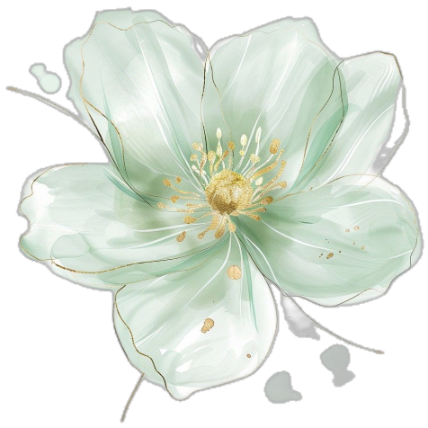

一周备餐：5 天午饭
周日做两种主菜 + 一种蔬菜，分 5 盒冷藏，第 4、5 天的放冷冻。
40 · NOTES
38 张知识卡 · 今天要复习6 张 · 本周新增 9 张

周日做两种主菜 + 一种蔬菜，分 5 盒冷藏，第 4、5 天的放冷冻。
df.groupby('类别')['金额'].sum() —— 按类别求和，用在账本分析上正合适。
情境 Situation、任务 Task、行动 Action、结果 Result，每个故事控制在 2 分钟。
专注 25 分钟，休息 5 分钟；做满 4 轮之后休息 15 – 30 分钟。
学费抵税表在 ACORN 下载，二月底前出，报税时填进去。
洗手后 1 分钟内涂护手霜，晚上厚涂 + 戴棉手套。